TCGA Lung Plot Gallery
Standalone SVG plots for cohort demographics, driver mutations, clinical comparisons, and exploratory survival associations. Also see index.html for the full report.
01_cohort_size_and_availability.svg
02_luad_vs_lusc_patient_counts.svg
06_ethnicity_distribution.svg
08_ajcc_pathologic_stage.svg
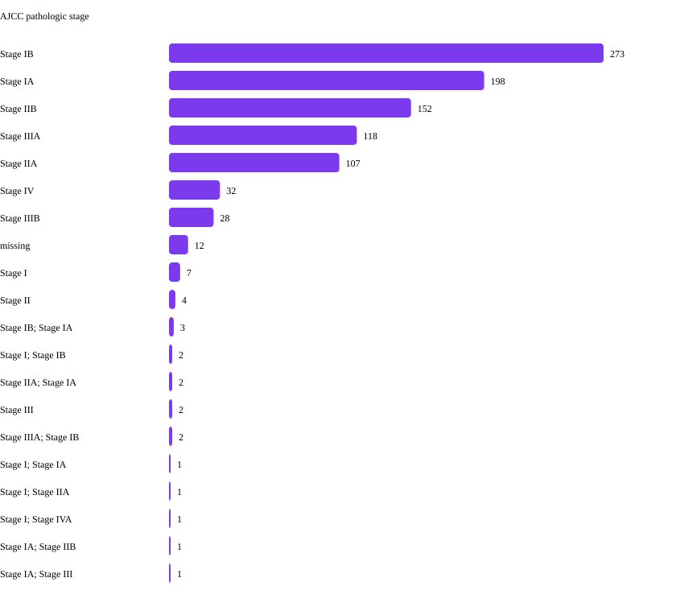
10_driver_mutation_frequency_luad_lusc.svg
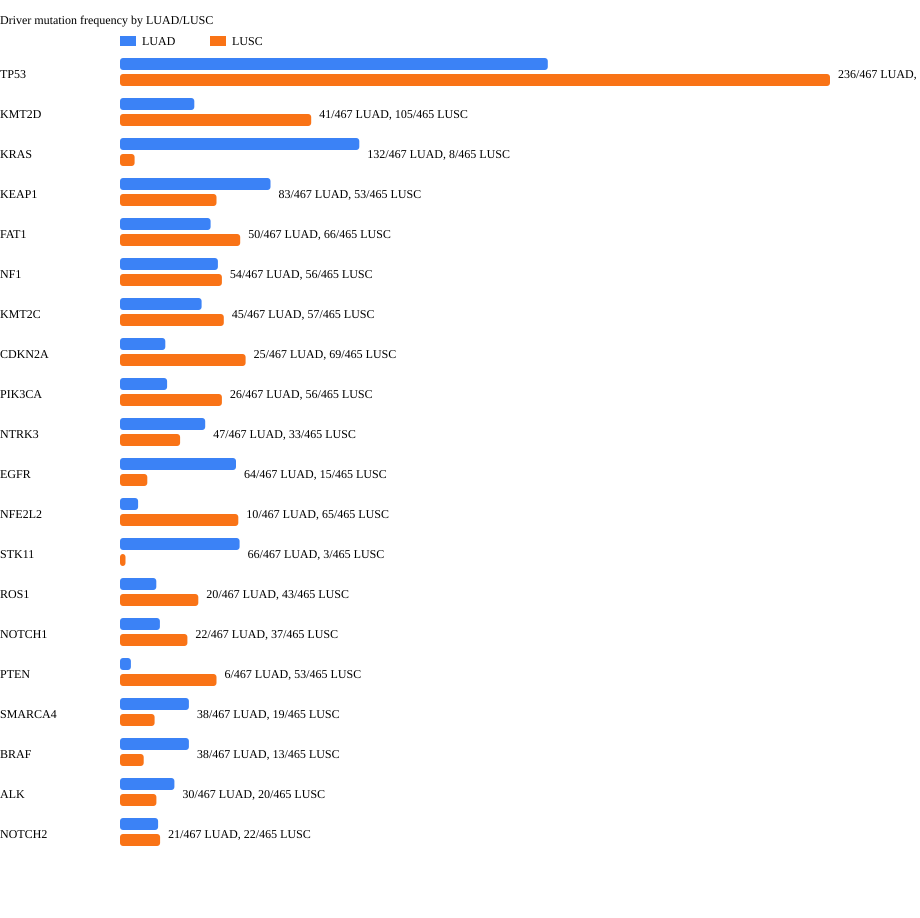
11_clinical_death_rate_by_mutation_status.svg
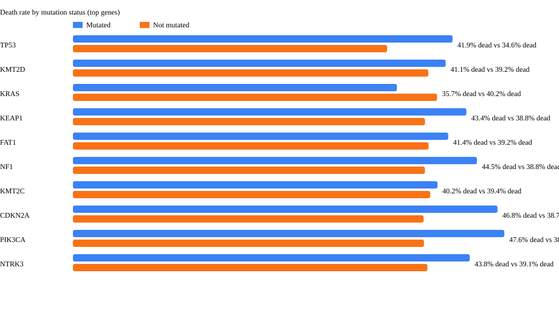
12_clinical_median_age_by_mutation_status.svg
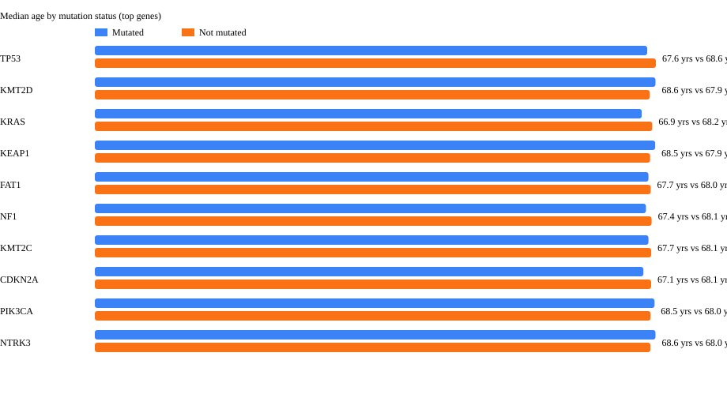
13_clinical_advanced_stage_by_mutation_status.svg
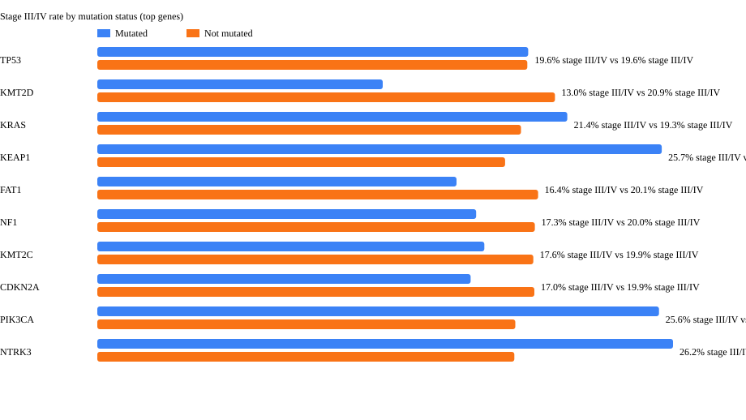
14_mutation_survival_pvalues.svg
15_rna_expression_survival_pvalues.svg
16_protein_expression_survival_pvalues.svg
17_mutation_survival_km_NOTCH2.svg
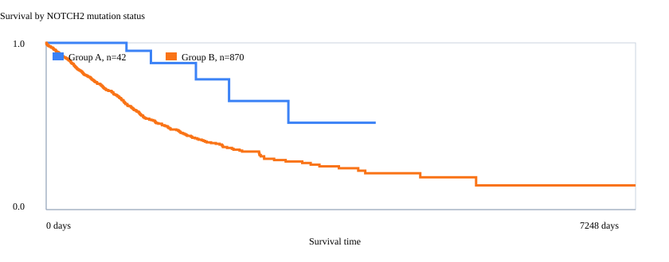
17_mutation_survival_km_CDKN2A.svg
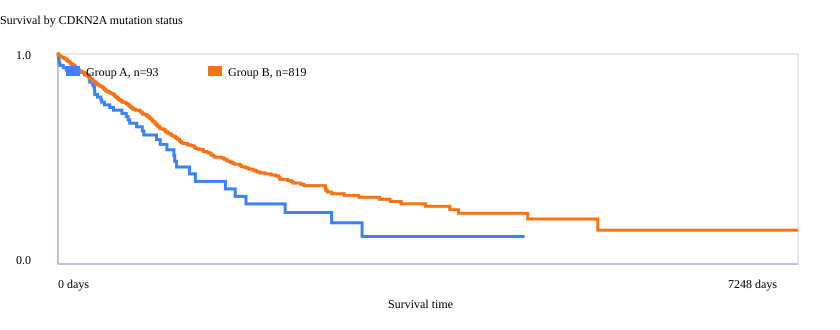
17_mutation_survival_km_TP53.svg
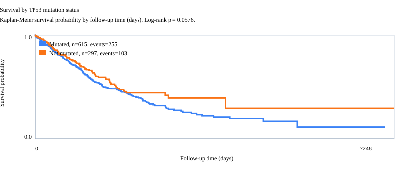
18_rna_survival_km_FAT1.svg
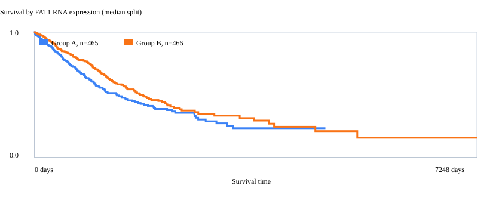
18_rna_survival_km_SOX2.svg
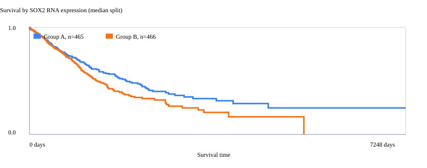
18_rna_survival_km_PTEN.svg
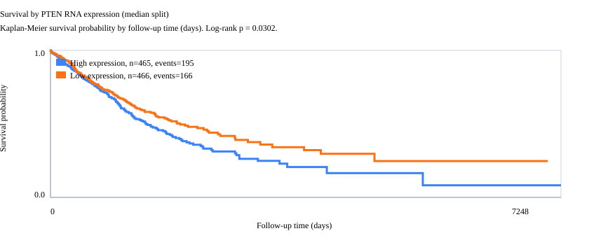
19_protein_survival_km_Sox2.svg
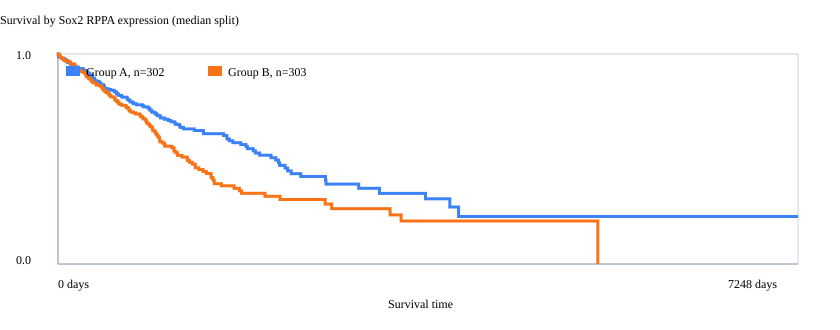
19_protein_survival_km_BRAF_pS445.svg
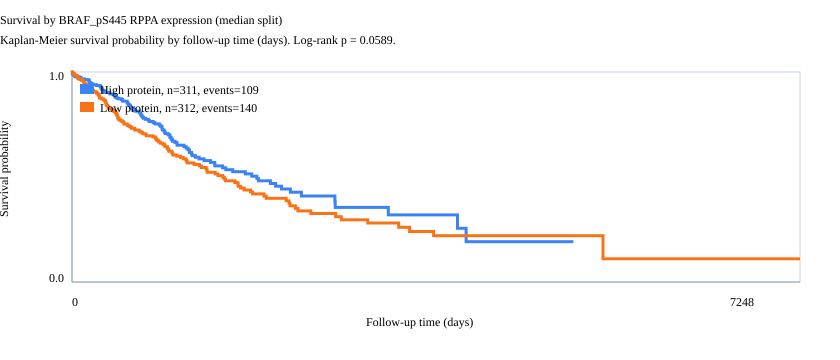
19_protein_survival_km_CMET_pY1235.svg
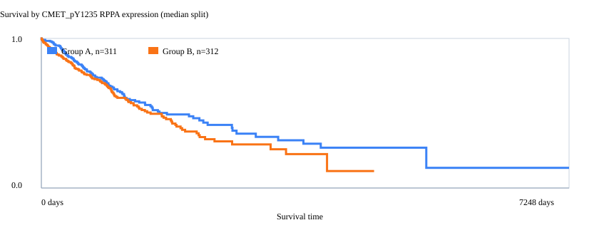